Single Cell RNA Sequencing Data Structures in R
In this section we will describe the common data structures of singe cell RNA sequencing data (scRNAseq) data and how to read in and manipulate these data in R, specifically using the Seurat package. Furthermore, we will demonstrate how to read-in and merge multiple data sets. Portions of this section have been adapted from a previous Tufts HPC workshop.
Learning Objectives
- Read single-cell RNAseq count matrices into R using
Seurat - Merge count matrices from multiple conditions into a single object
The Data
For this workshop we will be working with a scRNAseq dataset which is part of a larger study from Kang et al, 2017. The data is comprised of pooled Peripheral Blood Mononuclear Cells (PBMCs) taken from lupus patients, split into control and interferon beta-treated (stimulated) conditions. The counts for this dataset is freely available from 10X Genomics and is used as part of a Seurat tutorial.
Since they comprise PBMCs, we expect these data to include mononuclear immune cells, such as
- B cells
- T cells
- Natural killer cells
- Monocytes
- Macrophages
and exclude polymorphonuclear immune cell types (neutrophils) and nucleus lacking blood cells (erythrocytes and platelets).
Setting up R environment
Read in R packages
For this section, requires three R packages:
Seurat: A package for working with and analysis of scRNAseq data. Comprehensive tutorials for available analyses with theSeuratR package are available on the project website.Matrix: A package for working with large data matrices.tidyverse: Actually a compendia of packages, which include functionality for "tidy" data wrangling.
library(Seurat)
library(Matrix)
library(tidyverse)
Set base directory
We will be reading in and writing files relative to our intro_to_scrnaseq. For simplicity, we will create an R object that is simply a character string that gives this path, and use it as a prefix for reading and writing files.
baseDir <- "~/intro_to_scrnaseq/"
scRNAseq count files
Following pre-processing of raw files, scRNAseq count data is generally stored in directories containing three files. In this workshop will be working with two scRNAseq count data sets for each of our two condition, stored in two directories:
ctrl_raw_feature_bc_matrix: Control PBMCsstim_raw_feature_bc_matrix: Interferon beta-treated (stimulated) PBMCs
Each directory contains our count data as three compressed files:
barcodes.tsv.gzfeatures.tsv.gzmatrix.mtx.gz
Next, we will read in describe each file in the ctrl_raw_feature_bc_matrix directory.
barcodes.tsv.gz
This is a text file which contains all cellular barcodes present for that sample. Barcodes are listed in the order of data presented in the matrix file (i.e. these are the column names).
barcodes <- read.delim(file.path(baseDir, "data/ctrl_raw_feature_bc_matrix/barcodes.tsv.gz"), header=F)
head(barcodes)
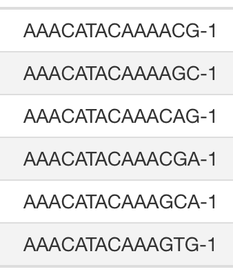
features.tsv.gz
This is a text file which contains the identifiers of the quantified genes. The source of the identifier can vary depending on what reference (i.e. Ensembl, NCBI, UCSC) you use in the quantification methods, but most often these are official gene symbols. The order of these genes corresponds to the order of the rows in the matrix file (i.e. these are the row names).
features <- read.delim(file.path(baseDir, "data/ctrl_raw_feature_bc_matrix/features.tsv.gz"), header=F)
head(features)
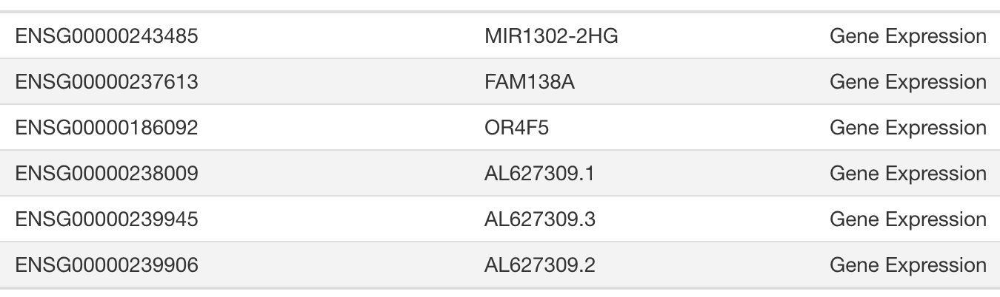
matrix.mtx.gz
This is a text file which contains a matrix of count values. The rows are associated with the gene IDs above and columns correspond to the cellular barcodes. Note that there are many zero values in this matrix.
Note, we will read this file in R, using the readMM() function from the Matrix package. This will create a "sparse matrix" which is formatted to save space due the redundancy of 0 values. When we view this object, 0 values are shown as "."s. Below, we print the first ten rows and columns.
matrix <- readMM(file.path(baseDir, "data/ctrl_raw_feature_bc_matrix/matrix.mtx.gz"))
matrix[1:10, 1:10]
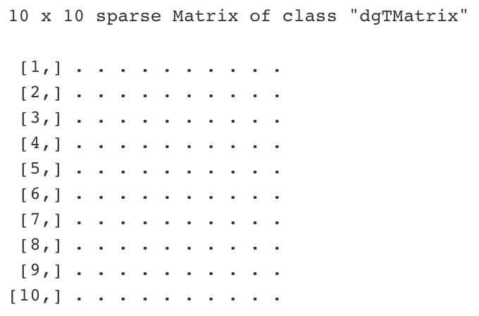
Based on the dimensions of this object, we see that there are 33,538 genes (rows), and 737,280 samples (columns) in these data.
dim(matrix)
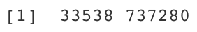
Creating Seurat objects
As previously mentions, in this workshop, we are going to perform the bulk of scRNAseq data manipulation and analysis using the Seurat R package. To this end, we are going to start by reading in the data to a Seurat object. A Seurat object has a specific data structure, for which functionality of the Seurat R package is built around for performing various procedures with our scRNAseq data.
This can be performed in two steps.
First, we use the Read10X() function from the Seurat package to load our scRNAseq data into R. This function assumes that our data is stored in a directory containing our three files, barcodes.tsv.gz, features.tsv.gz, matrix.mtx.gz, which is the standard for scRNAseq data generated by 10X Genomics. Thus, rather than reading in each file individually, we only need to set the path to the directory.
ctrl_counts <- Read10X(data.dir = file.path(baseDir, "data/ctrl_raw_feature_bc_matrix"))
Second, we use the CreateSeuratObject() function to convert the data as a Seurat object. Additionally, when we implement this function, we perform an initial data processing step by setting min.features = 100. This will remove cell profiles for which there are fewer than 100 genes with counts greater than 0.
ctrl <- CreateSeuratObject(counts = ctrl_counts,
min.features = 100)
Seurat object structure
Basic features of a Seurat object can be viewed by simply calling the object itself.
For example, viewing the object output we can see that after filtering low coverage samples, we are left with 15,688 cell profiles. Which is only about 2% of the total in the raw count matrix file.
ctrl
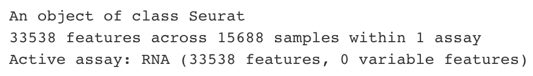
Expression data "assays"
Note that as part of the output we see the term "Active assay: RNA". In Seurat objects, expression data is organized into these "assays", where each assay is a container in which different states of the expression data are stored separately. In Seurat v5, expression data within an assay are stored in layers rather than slots. Common layers include counts, data, and scale.data.
RNAassaycountslayerdatalayerscale.datalayer
The counts layer
The counts layer contains the expression data as counts in a sparse matrix. Below are a couple of examples for accessing these data from the Seurat object.
countSlot <- GetAssayData(ctrl, assay = "RNA", layer = "counts")[1:5, 1:5]
countSlot
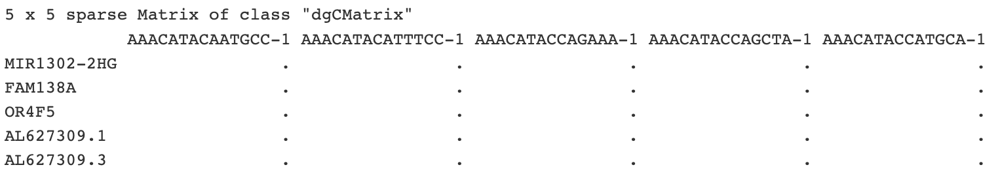
The data layer
The purpose of the data layer is to store normalized data. We will perform normalization procedures later in this workshop, and this is commonly performed using the NormalizeData() Seurat function. Since no normalization has been performed yet, the data layer is currently empty. For now, we show the counts layer again for comparison.
GetAssayData(ctrl, assay = "RNA", layer = "counts")[1:5, 1:5]
The scale.data layer
Numerous analytic procedures are best suited for data that has been scaled, such that the mean expression of every gene is equal to 0 with standard deviation equal to 1. This procedure is generally performed on normalized data, and the resulting scaled data is stored in the scale.data layer. Since scaling has not yet been performed, this layer is currently empty.
scalSlot <- GetAssayData(
ctrl,
assay = "RNA",
layer = "scale.data")
scalSlot
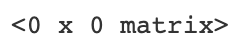
Seurat objects with multiple assays
To prevent overwriting data or necessitating the creation of multiple Seurat objects, various procedures will create new assays for storing data. For example, later in this workshop we will perform a procedure, using the SCTransform() function (detailed later), which creates a new assay and the resulting assay structure of the Seurat object will have an assay structure:
- RNA assay
- counts
- data
- scale.data
- SCT assay
- counts
- data
- scale.data
We can list the available assays that have been created using the Assays() Seurat function. More importantly we can set the default assay using the DefaultAssay() function. This is good practice when working with Seurat objects containing multiple assays, to ensure that specific procedures are performed on the data for which they are intended.
Assays(ctrl)
DefaultAssay(ctrl) <- "RNA"
Cell profile metadata
In Seurat objects, the "metadata" refers to a data frame, in which we store additional information for each cell profile.
We can access this data from the Seurat object in a number of ways. For example, below we show two ways of accessing the entire metadata data frame.
metaData <- ctrl[[]]
metaData <- ctrl@meta.data
head(metaData)
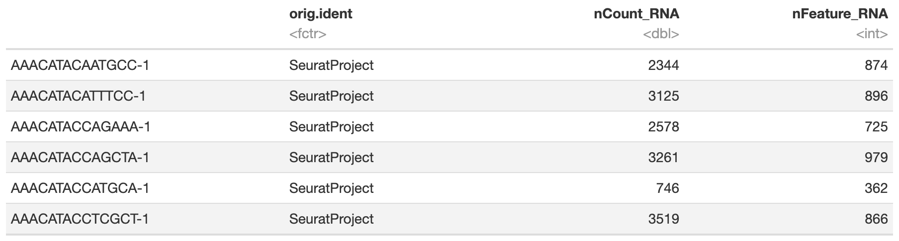
Here, the rows are in the same order as the expression matrix, which allows use to index the expression data based on this information.
By default, the CreateSeuratObject() function creates three columns in the meta.data
orig.ident: An identifier for the data setnCount_RNA: The total number of counts each cell profilenFeature_RNA: The total number of genes with counts > 0.
In addition to all columns there are a number of ways to extract specific columns in the metadata directly from the Seurat object. For example, here are two ways we can extract the nCount_RNA column from the metadata.
nCount <- ctrl$nCount_RNA
nCount <- ctrl@meta.data$nCount_RNA
head(nCount)
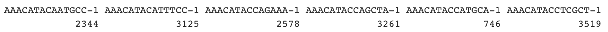
Alternatively, there are many ways to extract multiple metadata columns from the Seurat object.
multCols <- ctrl@meta.data[, c("nCount_RNA", "nFeature_RNA")]
multCols <- ctrl[[c("nCount_RNA", "nFeature_RNA")]]
head(multCols)
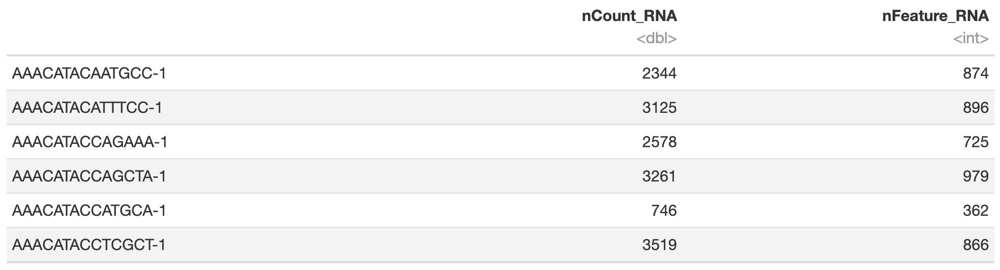
Combining data sets
It is common for scRNAseq projects to include multiple samples profiled separately. In our case we have two separate data sets, comprising profiles from "control" and "stimulated" PBMC samples. Accordingly, we're going to combine these data into a single Seurat object, while assigning information as to their source in the metadata.
Here, we use a for loop to read in each of the two data sets. Within each we assign an identity to each data set using the project argument.
for (file in c("ctrl_raw_feature_bc_matrix", "stim_raw_feature_bc_matrix")){
seurat_data <- Read10X(data.dir = file.path(baseDir, "data", file))
seurat_obj <- CreateSeuratObject(counts = seurat_data,
min.features = 100,
project = file)
assign(file, seurat_obj)
}
We have just created two Seurat objects, ctrl_raw_feature_bc_matrix and stim_raw_feature_bc_matrix. And if we check the metadata of ctrl_raw_feature_bc_matrix to see that its source has been saved in the orig.identity column.
head(ctrl_raw_feature_bc_matrix@meta.data)
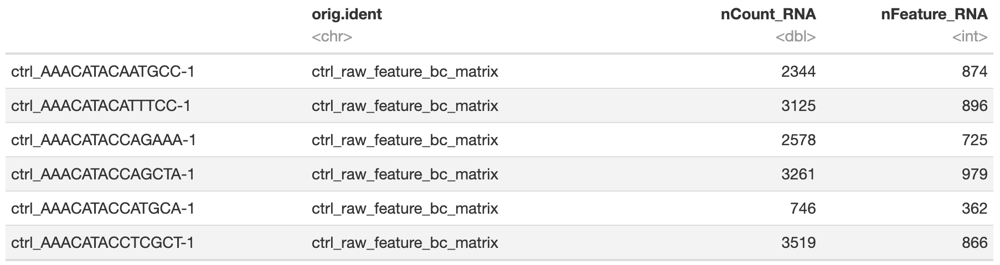
Finally, we merge the two Seurat objects with the merge() function below. Since each data set will contain likely some of the same cell profile identifiers, e.g. "AAACATACAATGCC-1", we add a prefix to these identifiers using the add.cell.id argument.
merged_seurat <- merge(x = ctrl_raw_feature_bc_matrix,
y = stim_raw_feature_bc_matrix,
add.cell.id = c("ctrl", "stim"))
Using the orig.identity column we can check how many cell profiles from each data set are contained in the merged data set.
table(merged_seurat@meta.data$orig.ident)
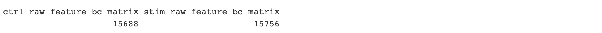
Adding metadata for downstream analyses
Now that we have the fully merged scRNAseq data, we will add a couple additional columns to our metadata, which we will later use for quality control. These columns comprise calculations of two metrics, which are indicative the quality of individual cell profiles.
- Novelty score: this metric with give us an idea of the complexity of our dataset (more genes detected per UMI, more complex our data).
- Percent mitochondrial UMI: this metric will give us a percentage of cell reads originating from the mitochondrial genes
Novelty score
This value is quite easy to calculate, as we take the log10 of the number of genes detected per cell and the log10 of the number of UMIs per cell, then divide the log10 number of genes by the log10 number of UMIs. The novelty score and how it relates to complexity of the RNA species, is described in more detail later in this lesson.
merged_seurat$log10GenesPerUMI <- log10(merged_seurat$nFeature_RNA) / log10(merged_seurat$nCount_RNA)
Percent mitochondrial UMI
Seurat has a convenient function that allows us to calculate the **proportion of transcripts mapping to mitochondrial genes(. The PercentageFeatureSet() function takes in a pattern argument and searches through all gene identifiers in the dataset for that pattern. Since we are looking for mitochondrial genes, we are searching any gene identifiers that begin with the pattern "MT-". For each cell, the function takes the sum of counts across all genes (features) belonging to the "Mt-" set, and then divides by the count sum for all genes (features). This value is multiplied by 100 to obtain a percentage value.
merged_seurat$percMitoUMI <- PercentageFeatureSet(object = merged_seurat, pattern = "^MT-")
Finishing touches
Finally, we will make a few additional changes to our metadata to facilitate downstream analyses.
First, we will create a new metadata column with simplified identifers for each of the merged data sets. We can do this easily, by taking the first 4 characters of the values from the orig.identity column, and assigning them to a new column.
merged_seurat$sample <- substr(merged_seurat@meta.data$orig.ident, 1, 4)
table(merged_seurat$sample)
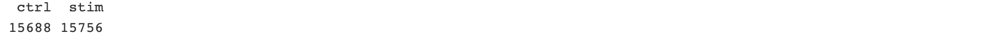
Next, we will rename several of metadata column names short, so they are shorter and more intuitive (to us at least).
merged_seurat@meta.data <- merged_seurat@meta.data %>%
dplyr::rename(seq_folder = orig.ident,
nUMI = nCount_RNA,
nGene = nFeature_RNA)
Lastly we can check the final formatted metadata dataframe with all of our newly added and formatted metadata columns. These are a lot of columns to view in our console and html output, so we'll just use the View() R function.
View(merged_seurat@meta.data)
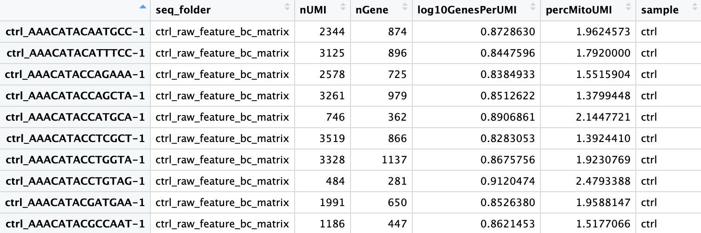
Save seurat object
That's it! At this point, we can save our merged data set and move on to quality control.
saveRDS(merged_seurat, file.path(baseDir, "results/merged_seurat.rds"))
You can now open "03_quality_control.Rmd" to continue on the the next section.
Check your understanding
Which cell ID has the highest percent mitochondrial UMI (percMitoUMI) in this dataset? (Hint: try which.max() or arrange(desc(percMitoUMI)) on the metadata.)